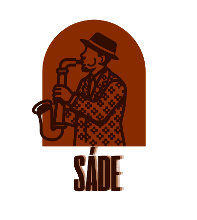

Sade Jazz Café — Website Project
The aim of this project was to design and develop a website for Sade Jazz Café. The website presents a café with a vintage jazz atmosphere where visitors can discover the café, explore its menu, learn about live music events and find contact information. The main goal was to create a visually attractive, easy-to-use website that reflects the identity of a jazz café.
The first objective was to create a clear and organised website with several connected pages. Another objective was to develop a consistent visual style using colours, images, typography and backgrounds. I also wanted to make the website interesting for visitors by including information about coffee, desserts and live jazz performances.
I used Visual Studio Code to write and organise the website code. HTML was used to create the structure and content of each page. CSS was used to control the appearance of the website, including colours, spacing, backgrounds, text styles and layout. I also used image files to make the website more visually appealing. An HTML audio element and a button were used to add a Play Jazz feature so visitors can listen to music.
The Home page is the main entrance to the website. It introduces Sade Jazz Café and establishes the visual style of the project. The navigation menu helps visitors move between the different pages.
The About page provides information about the café and its atmosphere. Images and background elements help communicate the vintage style and the connection between coffee and jazz music.
The Menu page presents the café's drinks and desserts. Images help visitors recognise the products and make the menu more attractive. The page is designed to make the available items easy to explore.
The Events page focuses on live jazz performances. It includes information about a Friday evening performance and introduces a featured musician. This page helps visitors understand the café's musical atmosphere and events.
The Contact page is intended to help visitors find information about the café's location and contact details. Providing this information makes the website more useful for potential customers.
The Web Report page explains the purpose of the project, the technologies used, the website structure, design decisions, challenges and the skills developed during the process.
I chose a dark colour scheme with gold details to create a sophisticated vintage jazz atmosphere. Background photographs help establish the mood, while text and content sections are arranged to make the pages easier to read. I aimed to keep the design consistent across the website so that all pages feel like parts of the same café brand.
The navigation menu contains links to the Home, About, Menu, Events, Contact and Web Report pages. These links allow visitors to move between the sections without having to return to the Home page each time. Using separate HTML files also helped me organise the project into manageable parts.
One interactive feature is the Play Jazz button. The button uses JavaScript written inside an HTML event attribute to start the audio element when the visitor clicks it. The audio is set to loop, allowing the music to repeat. This feature supports the theme of the café and makes the website more engaging.
During development, I encountered challenges with the layout, background images, navigation links and audio feature. Some elements did not appear as expected at first. I worked on these problems by checking the HTML and CSS code, adjusting selectors, checking file paths and testing the pages in a web browser. This process helped me understand the importance of testing and correcting errors during website development.
I tested the website in a browser while developing it. I checked that the pages opened, that navigation links pointed to the correct HTML files and that images used the correct file paths. I also tested the Play Jazz button to check whether the audio could start after a click. Testing helped me identify areas that needed further improvement.
This project helped me practise the basic principles of web development. I learned how HTML creates the structure of a page and how CSS changes its appearance. I also gained experience with navigation links, images, background properties, audio elements and simple interactive features. In addition, I learned that debugging is an important part of programming and that small changes should be tested carefully.
In the future, I would like to improve the website's mobile layout and make sure that it works well on different screen sizes. I could also add more details about events, improve accessibility, provide more complete contact information and refine the menu. These improvements would make the website more useful and accessible to a wider range of visitors.
In conclusion, Sade Jazz Café was an opportunity to apply HTML and CSS to a practical website project. The website brings together information about the café, its menu, live jazz events and contact details in one place. Developing the project helped me improve my coding, design, testing and problem-solving skills. It also gave me a better understanding of how individual web pages work together to form a complete website.